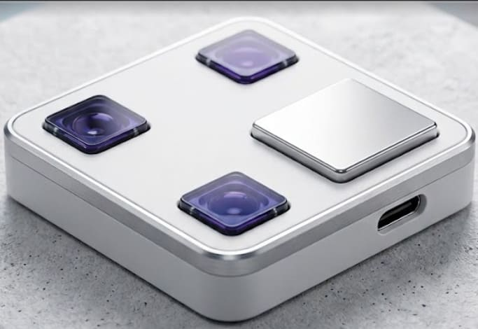
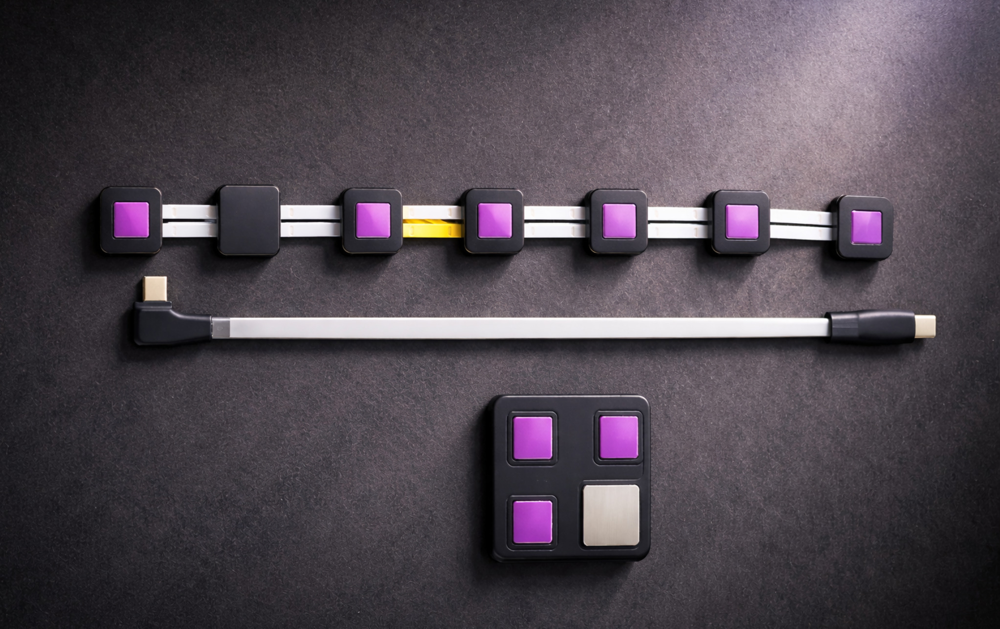

"We believe in a world where mankind is digitized, connected, and screened for early heart disease detection and prevention."
Carditek Medical Devices is at the forefront of revolutionizing cardiac diagnosis, designed with a patient-first approach.
Sydäntek ECG system has been used in clinical trials and pivotal pilot studies at hospitals in Bangalore, Chennai, and Vellore.
Cloud-connected and AI-enabled, building ECG registries for the Indian population with every ECG stored and annotated.
A versatile doctor's prescription-only solution — from 12-lead ECG to HF-ECG, colour scalograms, and long-term monitoring from a single wearable device.

Sydäntek ECG Patch
Compact · Wearable · No electrodes

Clinical Deployment
Pilot studies across leading hospitals in India
The Carditek Team
Koramangala, Bengaluru · Taking technology to people
⏸ Paused
Technology
A Full Spectrum of Cardiac Intelligence
Conventional ECG captures only 0.05–40 Hz at 300–500 samples/sec.
Sydäntek samples at 1000/sec across a vastly wider range —
revealing cardiac signals invisible to 100-year-old technology.
12-Lead ECG
Standard 12-lead ECG from a single compact wearable patch. Instantly deployable with minimal instruction, accessible even in remote areas.
Standard
HF-ECG (High Frequency)
Detects ischemia with less than 1-minute delay at 150–250 Hz using signal averaging. First in India to bring this to the patient's bedside.
First in India
Ultra HF-ECG
Dyssynchrony detection at 250–500 Hz assists patient selection for CRT pacemakers and provides real-time guidance during His Bundle pacing.
Advanced
Short & Long Holters
ML-powered reports condensed to a single readable page in under 15 seconds. Real-time back-office monitoring reports arrhythmias to doctors within minutes.
ML-Powered
Colour Scalograms
Wavelet-based colour spectrograms visualise subtle cardiac frequency changes (3–10 Hz), enabling early detection of heart failure and diastolic dysfunction.
Unique
Surface His Bundle ECG
Captures His bundle electrical activity non-invasively for precise pacemaker lead positioning and cardiac conduction analysis.
Rare Capability
Why Sydäntek
100-Year-Old Technology, Reimagined
Think chest pain — think ECGs — think liberation from clumsiness and time wasted.
✕ Conventional ECG
Clumsy. Limited. Outdated.
✕Sticky electrodes and tangled wires required
✕Samples only 0.05–40 Hz — misses critical data
✕300–500 samples/sec — low resolution
✕No cloud connectivity or AI analysis
✕Difficult setup with steep learning curve
✕Single modality — 12-lead only
✕Missed ischemia in chest pain triages
✕Large disposable waste footprint
✓ Sydäntek by Carditek
Accurate. Wearable. Intelligent.
✓No electrodes, no wires — capacitive sensors
✓Captures up to 500 Hz (HF & UHF ECG)
✓1000 samples/sec — 480,000 bytes/sec to cloud
✓AI-enabled, cloud-connected, annotated registry
✓Instant deployment — minimal training needed
✓12-lead + HF-ECG + Holter + Scalograms + HRV
✓Ischemia detected in under 1 minute
✓Zero disposables — sustainable design
Clinical Applications
Changing How Cardiologists Make Decisions
From emergency triage to post-procedure monitoring, Sydäntek delivers data
that cardiologists do not currently have access to.
01 — Emergency
Chest Pain Triage
HF-ECG raises clinician confidence in chest pain cases to over 95%, dramatically reducing unnecessary admissions. No longer will we have missed diagnoses in emergency triages.
5
of 100 have MACE & 1 dies
>50
die within 5 years
~25
rehospitalized in 30 days
02 — Post-Procedure
Stent & Angioplasty Monitoring
Real-time HF-ECG detects acute in-stent thrombosis and recurrent ischemia within minutes of a procedure. Gone are the days of silent ischemia in the cardiac unit after stent or surgical procedures.
03 — Pacemakers
Dyssynchrony & CRT Guidance
Only 30% of patients benefit from CRT pacemakers under current selection criteria. Colour spectrograms and UHF-ECG provide real-time guidance during His Bundle pacing, improving outcomes.
04 — Heart Failure
HFpEF & HFrEF Monitoring
Colour scalograms detect diastolic dysfunction early and serially track disease progression. Serial data on these patients is priceless — changes foresee decompensation before irreversible damage sets in.
Recognition
Awards, Grants & Partnerships
Validated by India's leading scientific institutions, government bodies, and international organisations.
BIRAC BIG Grant (13th Call)National Biopharma Mission — innovation funding
National Biopharma Grant — BIRACSpecifically awarded for HF-ECG technology
Innovation Grant — Pfizer & IIT DelhiCollaborative healthcare innovation programme
MSME Grant — IISc BangaloreStartup support from premier institution
PRISM II — DST AIC BanasthaliNational Aerospace Laboratories programme
Mentored by DERBI FoundationMedical device incubation excellence
National Bio Entrepreneurship 2020Competition winner
Our mission is to revolutionize cardiac diagnosis through innovative technologies that enhance detection accuracy and improve patient outcomes — making ECG data accessible everywhere while capturing signals that 100-year-old technology simply cannot.
Conventional ECG machines use sticky electrodes and sample only 0.05–40 Hz at 300–500 samples/sec. Sydäntek is a compact wearable patch with no electrodes, no wires, sampling at 1000/sec up to 500 Hz. It captures HF-ECG, colour scalograms, Holter data, and surface His bundle ECG — all from one device, deployable anywhere.
No. Sydäntek is a doctor's prescription-only, medical-grade multimodal device. It has the highest specifications for a medical-grade device and is designed for cardiologists, surgeons, and paramedical healthcare workers — not a consumer product.
Sydäntek supports chest pain triage, post-stent and post-angioplasty monitoring, ischemia detection, heart failure (HFpEF and HFrEF), dyssynchrony assessment, pacemaker selection and guidance (including His Bundle pacing), arrhythmia monitoring, and long-term cardiac surveillance.
Pilot studies at Sri Jayadeva Institute (Bangalore), Madras Medical Mission Hospital (Chennai), Kovai Medical Center (Coimbatore), King George's Medical University, and IISc Bangalore. International collaboration with Manchester University UK on Level42 AI research.
AI and machine learning are used across data, hardware, and software — including simultaneous beat detection, classification, and rhythm analysis. The device is cloud-connected with registries being created for the Indian population, and every ECG is annotated for easy clinical reference.
Cardiologists, cardiac surgeons, paramedical healthcare workers, medical distributors, and hospital systems seeking advanced cardiac diagnostic technologies. Sydäntek is also suitable for patients requiring innovative long-term cardiac monitoring under medical supervision.
We specialise in both diagnosis and treatment. Our product range includes diagnostic devices as well as the Electro Chemo Therapy (ECT) system designed specifically for the treatment of cancer in addition to our comprehensive cardiac monitoring portfolio.
Get in Touch
Let's Talk About Your Cardiac Needs
Whether you are a cardiologist, hospital administrator, researcher, or medical distributor — we'd love to hear from you.